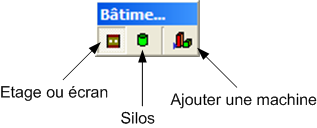
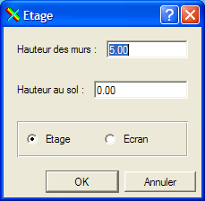

La barre d'outils Bâtiment est uniquement active lorsque un modeleur de bâtiment est actif.
Cet outils permet de dessiner le contour d'une construction qui sera soit un étage, soit un écran. Ce choix se fait via la boîte de dialogue suivante :

Le champ "Hauteur au sol" permet de créer de nouveaux étages à un bâtiment en contenant déjà.
Cet outils permet de dessiner un silos.
Cet outils affiche la bibliothèque afin d'y choisir une machine à ajouter.